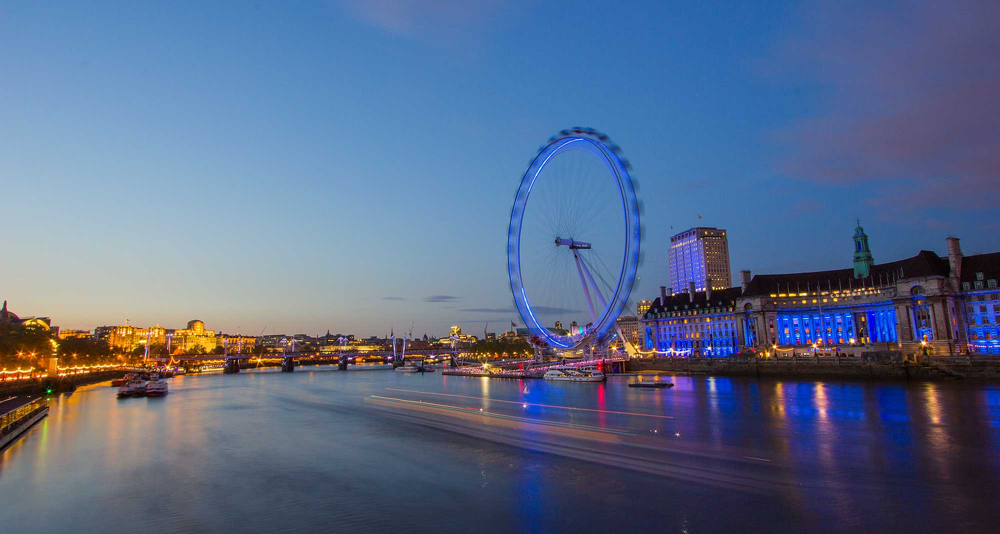
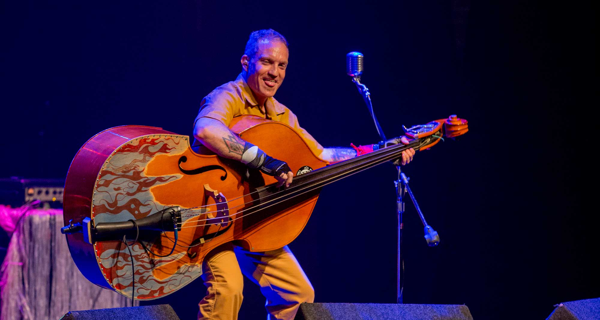
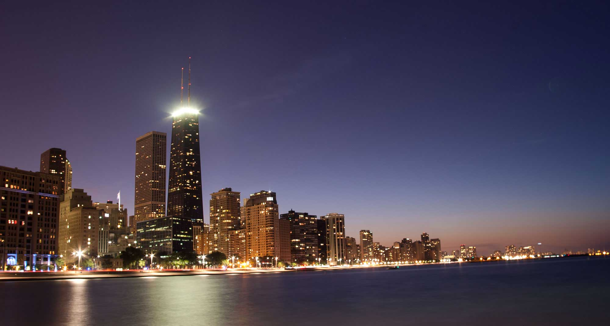
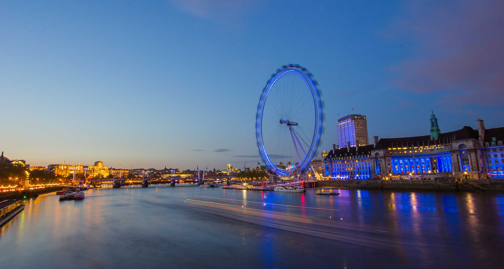
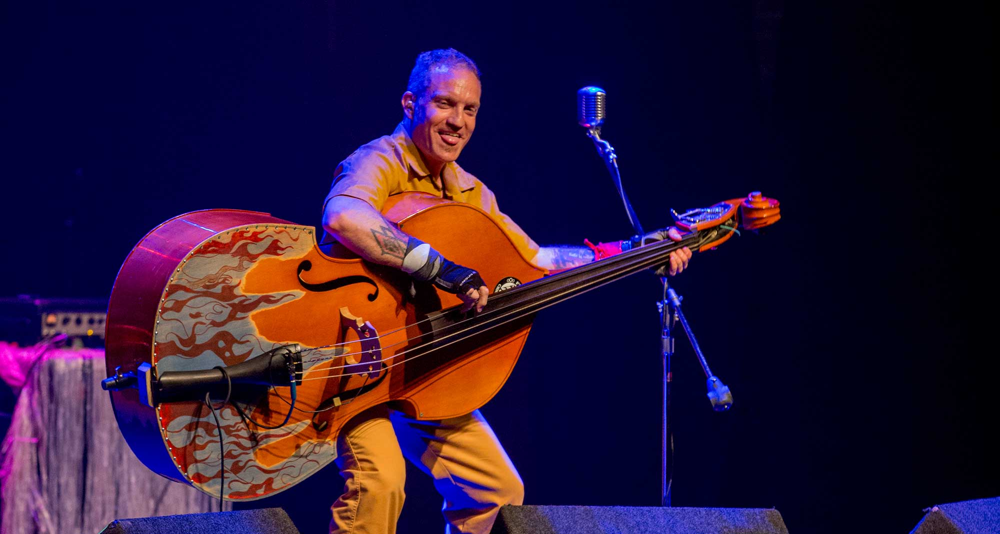
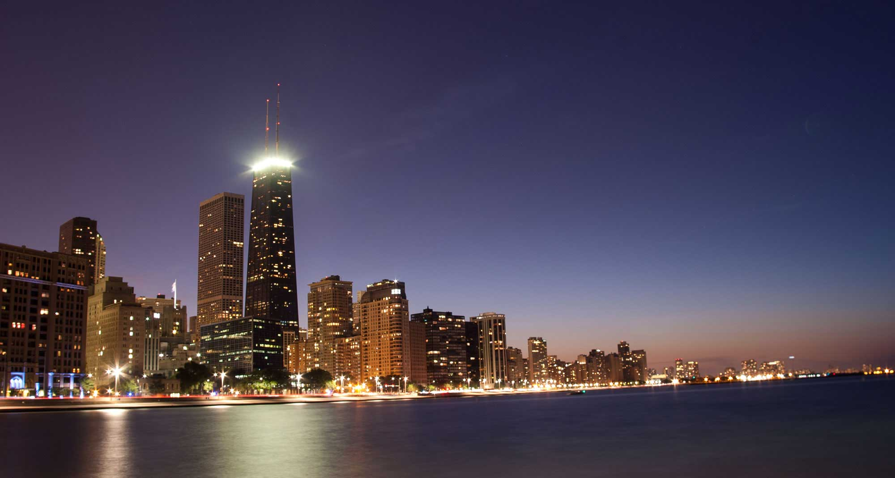

I was lucky enough to get my hands on a Canon 70-300mm IS L lens to play around with, and I had to share my initial impressions. I took a quick trip down to Navy Pier to play around with it and see how it handles in the field. The lens is all metal, so it is incredibly sturdy weighing in above 2 pounds. On a Black Rapid strap I didn't feel much fatigue letting it hang at my side, but shooting with it certainly gave my arms a good workout. While I wasn't blown over by the AF performance I was taken aback at how sharp the images came right out of the camera. I wanted to share two specific photos.
Cawing Seagull1/160, f/8.0, ISO125
This noisy guy was hovering around the few tourists, trying to get scraps of food from wherever he could find it. I snapped this photo at 300mm (this is a 100% crop). I couldn't believe the detail on the birds beak, incredibly sharp.
Seagull Portrait1/160, f/6.3, ISO100
Here was another portrait shot of a seagull that was perched on a railing, again shot at 300mm. The texture around the eye was what makes this photo pop. Incredible.
I have the lens for another few days so I want to run it through its paces some more, and when I do I'll share some more photos.
This past Friday I gave a 5 minute lightning talk at my work about the basics of photography and how you can get out of Auto mode. Instead of sharing the slides I want to expand on the talk I gave and write something more substantial. With entry level DSLRs becoming very affordable these days lots of amateur photographers are entering the market having never touched a film SLR, and generally have a very rough understanding of camera fundamentals.
There are three basic settings on the camera that are crucial to every photograph - photographers commonly refer to this as the Exposure Triangle. Every photograph is a balance of three settings - ISO, Aperture, & Shutter Speed - and I want to talk about each one and how they affect each other.
ISO
Simply put, ISO is how sensitive the camera's sensor is to light. If you're old enough to remember buying film you might recall that it had an ISO rating between 50 to about 1600 give or take. With modern DSLRs it can range from 50 to 100,000+. Having the camera on a low ISO setting, say 100, will produce crisp noise-free images, but it will not be very sensitive to light. Setting the camera to a high ISO, say 25,600, will make it much more sensitive to light allowing faster shutter speeds, the images will have noticeable noise.
(left)ISO 50 - (right)ISO 25,600
Here are two examples from real world shooting. On the left is a photo I took of a Great Blue Heron grooming itself one morning. I was shooting directly into the sun (not recommended at all) so I needed to drop my ISO down to 50 and raise my shutter speed to 1/4000th so I wouldn't blow out the image. The example is cropped but the original is sharp and almost completely noise free. On the right is a photo I took while shooting the Everly Hillbillies in concert. It was very dark and the drummer was poorly lit so I needed to raise my ISO to 25,600 to get enough light while opening the shutter for 1/200th of a second and you'll notice the image is extremely noisy.
Aperture
Think of Aperture like the iris of your eye - it is simply the adjustable size of the lens opening. This controls how much light comes through the lens to the sensor, as well as affecting depth of field. One thing students get caught up on is the terminology of how aperture is measured, in f stops. High apertures are when the lens allows the most light through, and conversely low apertures let the least light through. The confusing part is that high apertures are smaller numbers, and low apertures are high numbers. Lets take a look at two examples.
On the left is a Macro image taken at a very high aperture - f/2.8. For this shot the lens opening was as wide as it could go, allowing as much light as possible into the camera. This also created an extremely shallow depth of field (extremely exaggerated since it is a macro shot). The right image was taken at a very low aperture, f/16, letting very little light into the camera but getting almost everything in focus, from a few feet in front of the camera all the way to the horizon.
Shutter Speed
This is probably the easiest to understand and causes so many headaches for inexperienced photographers. Shutter speed is simply how long the cameras sensor is exposed to the light coming in through the lens. When you press the shutter button the mirror allowing you to see through the lens from the eyepiece springs upward and the shutter curtain snaps open and then closed almost instantly. Shutter speed is measured in fractions of a second, usually between 1/4000th of a second, down to multiple second (or minute) exposures.
Slow shutter speeds usually cause blurry and shaky images if not done properly. However if you use a tripod (or an very steady hand) you can create some interesting effects when slowing the shutter speed down. On the left is a shot of a London double decker bus passing in front of Elizabeth Tower. Using a monopod I slowed my shutter down to a quarter of a second to make sure the bus was blurred out, yet it was fast enough to hold steady so the tower itself was still sharp. In order to freeze motion you need a higher shutter speed. On the right is a shot of birds flying into my parents bird bath. They were flitting about extremely quickly so I had to set the camera to 1/2000th of a second in order to even come close to freezing the motion. You can see they were so fast that the wings were still blurred out even at that speed.
A good rule of thumb for shutter speed while hand held is it should never be slower than the focal length. I.e at 50mm lens should not be hand held for exposures under 1/50th, 200mm no less than 1/200th.
How the triangle works
Each setting impacts the other two so finding a balance between the three is critical to any exposure. If an exposure is too dark you can try to slow your shutter speed down, increase your ISO, or open up your aperture. If you want a longer depth of field you need to close down your aperture, but increase your shutter speed or ISO to compensate. If you don't understand how each side of the triangle works and how it impacts the others then practice until you do. This is the foundation of photography and having a working understanding of them is of the utmost importance. We'll dive deeper into all three in later posts, but until then, keep practicing!


 




